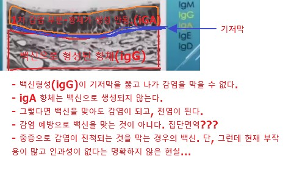

(1) 하와이대 연구팀 (논문을 국제학술지 '흉부종양학저널' 최신호에 발표)
"백신 접종자도 코로나 전파 가능...점막 보호 항체 생성 안 돼"(YTN)-하와이대 연구팀
https://www.ytn.co.kr/_ln/0104_202102012149201811_
"왼팔에 Baksin 맞고 오른팔 부여잡는" 미국 감염분 분야 권위자 - 파우치 박사의 무서운 비밀 (신세기tv - 2020/12/29)
https://www.youtube.com/watch?v=vr_fdZmHp5Y&feature=youtu.be
지난해 독감백신 접종후 110명 사망신고… 인과성 ‘0건’(국민일보-2021.3.3)
http://news.kmib.co.kr/article/view.asp?arcid=0015592228&code=61121111&cp=nv
내용 중 : 질병청은 작년에 피해조사반 신속대응회의를 전문가들과 20차례 개최해 “110건 모두 예방접종과의 인과성은 인정되지 않는다”고 결론 내렸다.